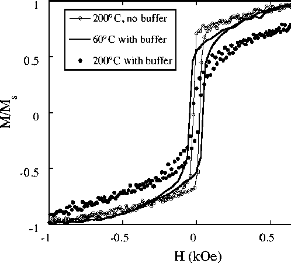

Magnetization curves of three (Fe/Si/Fe) trilayers. The open
circles are data for an
(Fe100Å/Si14Å/Fe100Å) film grown directly
on glass at +200°C. The filled circles are data on a
(Fe100Å/Si14Å/Fe100Å) film grown at
+200°C on a 500Å\ a-Si buffer layer on glass. The
solid curve is for a (Fe100Å/Si14Å/Fe100Å)
film grown at nominal RT on a 500Å a-Si buffer layer on
glass. The coupling is stronger in the film grown at high
temperature on a buffer than in either of the other two
films.